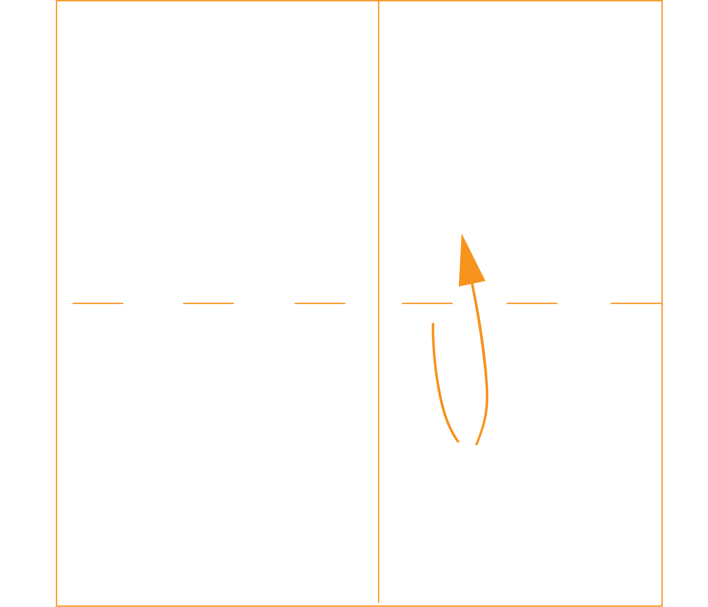
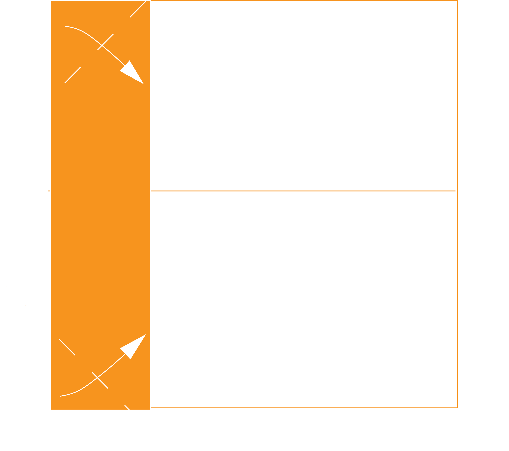

Paper Airplane Instructions

Step 1: Folding Steps
You will need to obtain one square piece of paper with sides at least 5 inches in length.
When performing the folding steps, be careful of paper edge so as not to cut yourself.
1. Fold your paper in half, creating a crease down the middle vertically, then unfold. (Creating a crease makes future steps much simpler to perform since it can provide a reference point, as well as making future folds easier.)
2. Now fold your paper in half horizontally to create a crease, then unfold.
3. Fold the left side end of your paper towards the middle vertical crease.
4. Fold the top and bottom corner edges of your previous fold to align with its vertical edge.
5. From the left middle point, fold your fold from step 3 towards your horizontal middle crease.
6. Fold in half from your horizontal crease.
7. Starting from the folded triangle corner, pinpoint the spot where the triangle's corner meets the bottom edge, and perform a tuck-in fold at approximately a 30 degree angle.
8. Finally, fold your two top flaps downward to make the wings.
9. Proceed to throwing steps.
Step 2: Throwing Steps
When performing throwing steps, be careful of the direction of the plane. It could potentially hit someone, especially in the eye.
1. Locate the spot on the bottom of the paper airplane where the most layers overlap. This is the center of gravity.
2. Hold the airplane by pinching lightly at the center of gravity with your index finger and thumb.
3. Keeping it level, release the airplane with a gentle, steady push.
4. Take note of the flight behavior and make adjustments where necessary to improve flight.
5. Return to step 2 until the optimal flight is achieved.